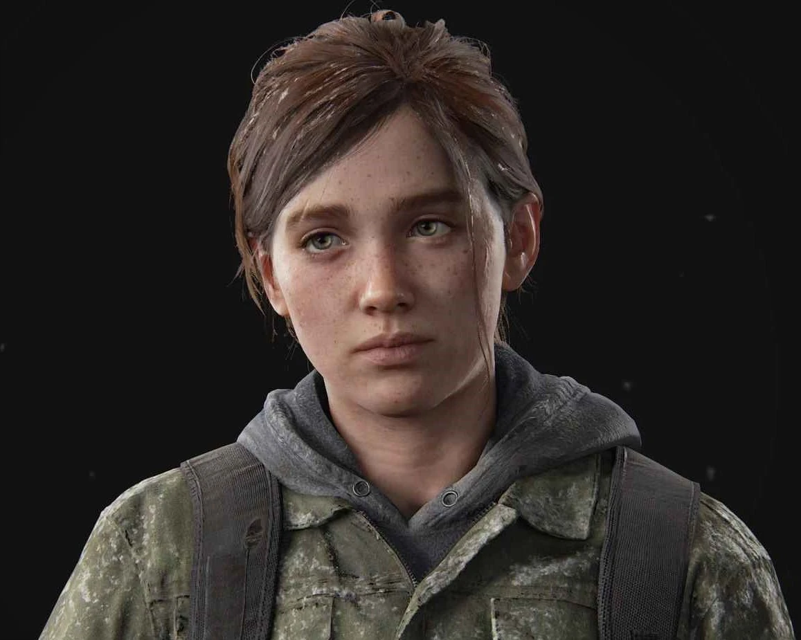
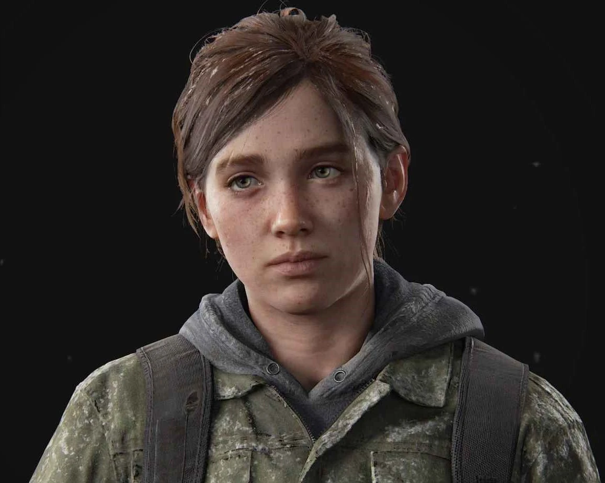

*ELLIE
Ellie, una adolescente valiente y decidida, nació después del brote de la infección y ha crecido en u n mundo devastado por la enfermedad y la violencia. A pesar de su juventud, Ellie posee una determinación feroz y una inteligencia excepcional. Sin embargo, también carga con su propio peso emocional. Perdió a su mejor amiga , Riley, en circunstancias trágicas y lleva consigo el peso de la culpa y el dolor. Ellie descubre que es inmune al Cordyceps, lo que la convierte en un activo invaluable en la búsqueda de una cura para la enfermedad. Cuando se encuentra con joel, se embarca en un viaje épico a través de u n Estados Unidos desolado y peligroso. A lo largo del camino, Ellie y joel enfrentan numerosos peligros, ta nto físicos como emocionales, mientras luchan por sobrevivir y encontrar una razón para seguir adelante en un mundo donde la esperanza es escasa. A medida que la historia avanza, joel y Ellie desarrollan un vínculo profundo y complejo, con joel asumiendo el papel de figura paterna y protectora para Ellie, y Ellie encontrando en joel una guía y un apo yo en un mundo lleno de desesperación. Su relación se convierte en el corazón emocional de la narrativa, y a través de sus experiencias juntos, ambos personajes encuentran la redención y la esperanza en un mundo marcado por la tragedia y la pérdida.
 
